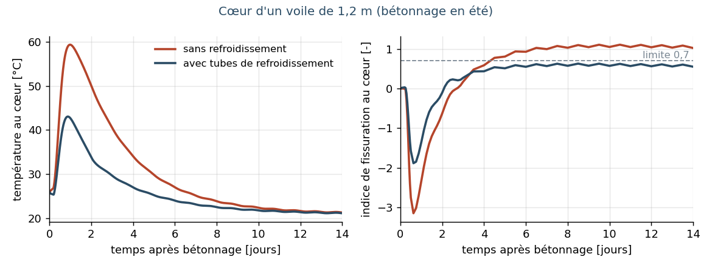
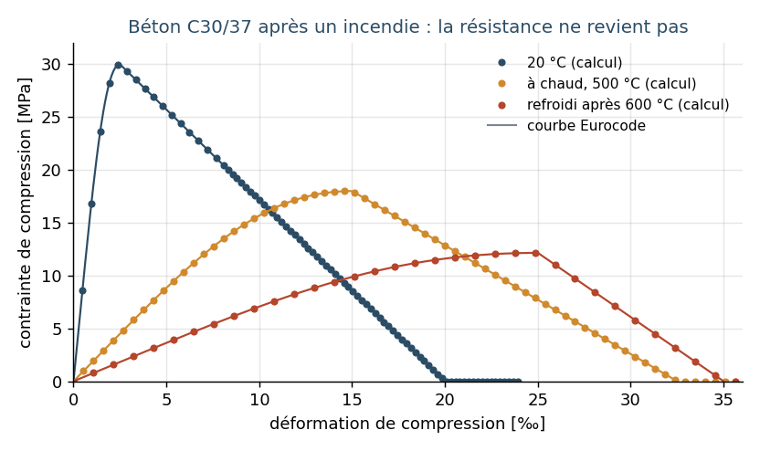

Du béton massif sans surprises, des structures qui résistent au feu
Deux questions reviennent souvent pour les ouvrages en béton et les bâtiments importants. Un voile épais va-t-il fissurer pendant son durcissement ? Et combien de temps une structure reste-t-elle debout en cas d'incendie ? Pour ces deux questions, nous avons développé notre propre chaîne de calcul, entièrement documentée, basée sur un logiciel d'éléments finis open source et vérifiée par rapport aux Eurocodes, à des calculs de référence indépendants et à des solutions analytiques.
Béton jeune : chaleur, refroidissement et fissures
Le béton qui durcit dégage beaucoup de chaleur. Sans refroidissement, le cœur d'un voile de 1,2 m atteint environ 60 °C, tandis que les parements et le radier plus ancien restent plus froids. Ce bridage engendre des contraintes de traction et, potentiellement, des fissures qui nuisent à l'étanchéité et à la durabilité.
Nous calculons l'évolution des températures par saison, avec ou sans tubes de refroidissement, le durcissement, le retrait et le fluage selon l'Eurocode 2, le risque de fissuration et – avec des modèles de fissuration explicites – l'ouverture des fissures. Pour un voile de tunnel réel, nos températures se situent à 1 ou 2 °C d'un calcul de référence indépendant, avec la même conclusion quant au besoin de refroidissement.
- Le refroidissement est efficace : sans refroidissement, le cœur d'un bétonnage estival atteint 61 °C et l'indice de fissuration au cœur monte à 1,1 (fissures attendues) ; avec des tubes de refroidissement, le cœur reste à 49 °C et l'indice à 0,63, sous la limite de 0,7 (voir figure).
- Ouverture des fissures : avec le degré de bridage issu du calcul et l'Eurocode 2 partie 3 (annexe M), l'armature étudiée donne une ouverture de fissure d'environ 0,07 mm. Des modèles de fissuration explicites calculent en outre les fissures elles-mêmes : leur nombre, leur position et leur ouverture.
- Calage sur mesures de chantier : avec deux thermocouples (cœur et coffrage), nous retrouvons le dégagement de chaleur, sa cinétique et l'échange thermique à moins de 1 % près, même avec du bruit de mesure.
- Résistance à la traction : des essais sur un béton de tunnel ont montré une résistance à la traction au jeune âge nettement supérieure à la valeur de l'Eurocode (le double après 1 jour, une fois et demie après 7 jours). Calculer avec des valeurs mesurées donne un risque de fissuration plus réaliste.

Incendie : au-delà des tableaux
Outre les tableaux, les Eurocodes autorisent des méthodes de calcul avancées : l'échauffement des sections et le comportement mécanique jusqu'à la ruine, avec des lois de matériau dépendant de la température. C'est intéressant pour les bâtiments existants avec un faible enrobage, pour les formes particulières et pour les scénarios d'incendie naturel.
- Échauffement vérifié : les températures dans les sections en béton et en acier suivent les solutions de référence des Eurocodes à 1 à 5 °C près.
- Poutres en acier : la ruine calculée se situe à moins de 5 °C de la température critique analytique. Les colonnes en acier avec flambement suivent la théorie du flambement avec la loi de l'acier dépendant de la température.
- Exemples de validation de l'annexe nationale allemande (DIN EN 1991-1-2/NA, annexe CC) : pour le poteau en console, le temps de ruine (97 contre 93 minutes), le déplacement en tête et le moment en pied respectent les tolérances, de même que l'armature de la poutre faiblement armée (4 % sous la référence). Pour la poutre fortement armée, nous trouvons 12,5 % d'armature en moins : les températures d'armature de référence sont plus élevées que dans tout recalcul, y compris les validations publiées d'autres logiciels. Avec les températures de référence, l'écart est de 6 %, dans la tolérance de 10 %.
- Dalle en béton sous incendie ISO : le calcul avancé donne 169 minutes de résistance au feu, contre 144 minutes avec la méthode simplifiée. Pour un bâtiment existant, cette différence peut éviter une rénovation.
- Phase de refroidissement d'un incendie naturel : le béton ne retrouve pas sa résistance. Avec une loi de matériau selon le nouvel Eurocode (FprEN 1992-1-2:2023), nous calculons aussi ce qui se passe après l'incendie. Une colonne chargée à 70 % de sa capacité à froid résiste à l'échauffement, mais s'effondre une heure après le pic de l'incendie, alors que le feu s'éteint déjà. À 60 %, elle reste debout, avec encore deux tiers de sa capacité initiale. Un calcul de contrôle indépendant donne les mêmes temps.

Qu'est-ce que cela signifie pour votre projet ?
- Béton massif (caves, tunnels, murs de soutènement, radiers) : besoin de refroidissement, phasage du bétonnage et armatures contre la fissuration justifiés plutôt qu'estimés.
- Sécurité incendie : vérification performantielle de structures existantes lors d'une rénovation ou d'un changement d'affectation, et contrôle indépendant de calculs de tiers.
- Transparence : chaque étape est documentée et vérifiée par rapport à une référence indépendante. Chaque application à un projet reçoit des données propres au projet et sa propre vérification.
Une question sur un projet concret ? Écrivez à info@easuys.be.